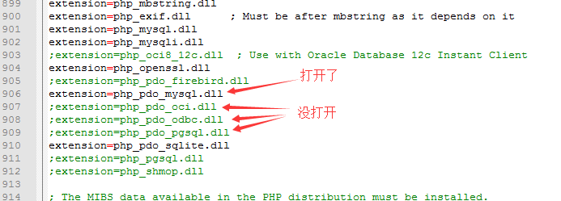

PDO：
PHP Data Object：php的数据对象。
pdo是数据库操作工具类！
1，它能操作很多种数据库，比如mysql，oracle，sybase。。。。
2，它具有操作数据库的更多的功能，比如事务。
3，它能操作各种数据，却有一致语法：即使用pdo，无需考虑不同数据库的sql语句的不同细节写法。
4，带错误处理！
pdo其实一个“类”，我们用的时候，就是new一个pdo对象出来。
在php代码中，操作mysql数据库的基本需求和结果：
1，连接数据库，得到“连接资源”；
2，执行各种sql语句，得到布尔值，或“结果集”；
3，对结果集数据，进行“取用”（通常就是遍历，fetch....）
pdo系统的逻辑结构：
php脚本->PDO数据对象->PDO MySQL引擎 ->MySQL数据库
->PDO Oracle引擎->Oracle数据库
->PDO 其他引擎 ->其他数据库要想使用（操作）不同的数据库，就需要去php.ini中，打开相应的pdo模块（组件），比如：

并重启apache。
1，连接数据库：
$DSN = "mysql：host=服务器地址/名称；port=端口号；dbname=数据库名";
$Options = array(PDO::MYSQL_ATTR_INIT_COMMAND=>’set names utf8’);
$pdo = new pdo($DSN, "用户名", "密码", $Options);
DSN: Data Source Name ，数据源名称，
2，执行sql语句：
$result1 = $pdo->exec( “增删改语句” ); //
//返回：
数字：表示该语句影响的行数。
false：表示执行失败。
$result2 = $pdo->query( “各种sql语句” );//习惯上query()方法用于执行select这种有数据返回的语句
$result2 结果有：
执行失败： false：
执行成功： 返回结果集——pdo结果集，通常称为pdostatement。
此结果集还需要进一步处理，就像mysql_query()返回结果一样！
3，断开连接——如果需要。
$pdo = null; //就是销毁对象而已。
$pdo->lastInsertId(); 获得最后一次自增长的id值
$pdo->beginTransaction(); 开始一个事务
$pdo->commit() 提交一个事务
$pdo->rollBack(); 回滚一个事务
$pdo->setAttribute(属性名，属性值）;
在php代码中，要想使用事务，可以这样：
$pdo->beginTransaction();
$pdo->exec( sql语句1);
$pdo->exec( sql语句2);
。。。。
if(如果没有错误){
$pdo->commit();
}
else{
$pdo->rollback();
}
pdo发生的错误，有两种处理模式：
静默模式：
就是发生错误后，并不产生错误提示或输出，而是需要去“人为”通过代码去获取，并判断。
比如：
$pdo -> exec( $sql ); //这条语句，可能出错，也可能不出错！可以做后续判断：
$Code = $pdo->errorCode(); //获取前一次执行sql语句的“错误代号”，如果没有错误，就是0
if($Code == 0){
echo “执行成功”;
} else {
$info = $pdo->errorInfo(); //获取错误信息，但这里结果是一个数组,其中下标为2的就是错误提示内容
echo “失败，请参考错误提示：” . $info[2];
}
异常模式：
是一种特别的语法形式，类似如下：
try{
//这里可以用pdo执行sql语句
//这个范围的语句，一旦出错，就会立即进入catach范围！
$pdo -> exec (“update user_list set user_pass=’456’ where id=16”);
}
catch(Exception $e){
//如果try范围的语句发生错误，就会执行这个catch范围的语句，否则就不会执行
//其中，$e是一个记录的错误信息的“对象”，跟$pdo->errorinfo()类似！处理如下：
echo “失败，请参考错误提示：” . $e->GetMessage();
}
后续代码。。。。
当使用pdo对象的query()方法，执行一条有返回数据的语句（比如select语句，desc语句，show语句），如果执行成功，返回的就是“pdo结果集对象”。
基本上，可以理解为：该对象中，“存放”了很多数据，我们需要去“取出来”。
对比：
php的原始mysql函数：$result = mysql_qury( “select .....”);
pdo的处理方法： $result = $pdo->query( “select ......”);
他们本质上一样！
pdo的结果集对象的常用方法：
$stmt = $pdo->query(“select ...... ”);//这是获得结果集对象
$stmt->rowCount() ; //行数
$stmt->columnCount() ; //列数
$stmt->fetch( [返回类型] ); //取出一行数据！结果是一个一维数组
返回类型常用的有：
PDO::FETCH_ASSOC：返回关联数组
PDO::FETCH_NUM：返回索引数组
PDO::FETCH_BOTH：返回前二者皆有的数组，这是默认值
PDO::FETCH_OBJ：返回对象
$stmt->fetchAll([返回类型]);//取出所有数据，结果是一个二维数组
$stmt->fetchColumn( [$i] );//可以取出指定的第i个列的数据（默认是0）
$stmt->errorCode(); //静默模式下，获得出错代号
$stmt->errorInfo();//静默模式下，获得出错信息，是一个数组
$stmt->closeCursor();关闭结果集，清理资源。